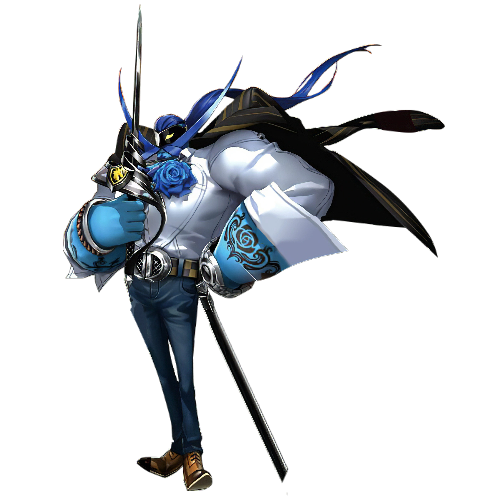
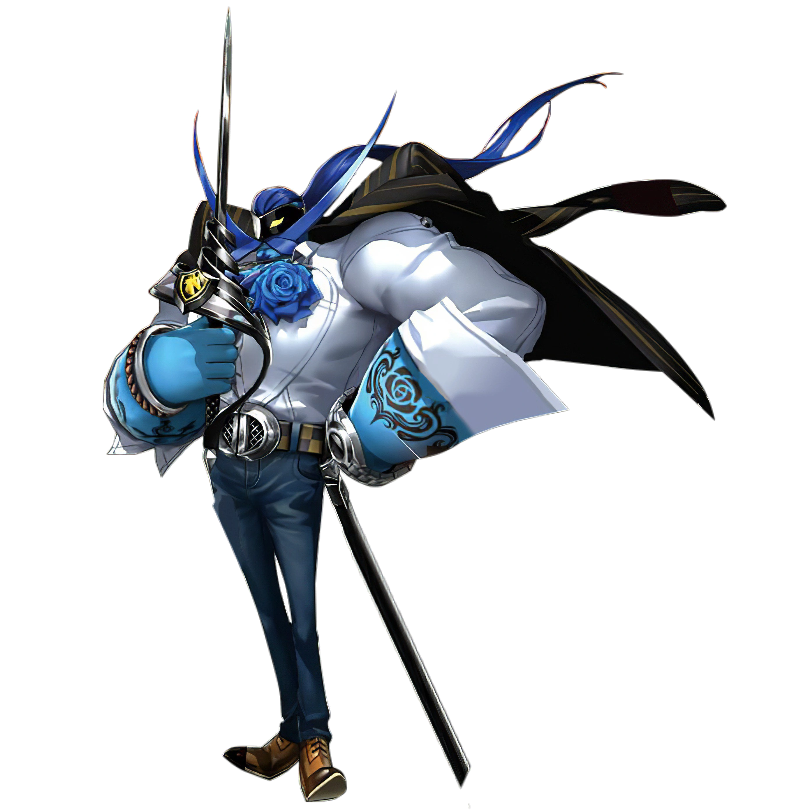

An amnesiac talking cat who moved
with Joker after their meeting
in the Metaverse
MAGICIAN ARCANA SKILLS
MAGICIAN ARCANA PERSONAS
MAGICIAN ARCANA SKILLS
| Rank | Name | Effect | Availability (Day) |
|---|---|---|---|
| 1 | Infiltration tools | Allows craft infiltration tools. | 4/15 |
| 2 | - | - | - |
| 3 | Follow up | Chance to perform a follow-up attack if Joker’s attack does not down the enemy. |
After clearing Madarame Palace |
| 4 | Kitty Talk | Chance to step in after Shadow negotiation fails, allowing a retry. |
6/20 |
| 5 | Pickpocket | Chance to obtain an item when Joker performs a melee attack. | After clearing Kaneshiro Palace |
| 6 | Ace Tools | Allows to craft all infiltration tools | 7/25 |
| 7 | Harisen Recovery |
Chance to cure status ailments inflicted upon party members. |
8/29 |
| 8 | Endure | Chance to withstand an otherwise fatal attack with 1 HP remaining. |
9/17 |
| 9 | Protect | Chance to shield Joker from an otherwise fatal attack. |
After clearing Okumura Palace |
| 10 | Second Awakening |
Morgana’s persona, Zorro, will awaken into its final form: Mercurius. (Diego in P5R) |
12/23 |
MAGICIAN ARCANA PERSONAS
 Zorro
Mercurius
 Diego
Jack Frost
Pyro Jack
Cait Sith
Zorro
Mercurius
 Diego
Jack Frost
Pyro Jack
Cait Sith
 Forneus
Nekomata
Choronzon
Queen Mab
Surt
Futsunushi
Rangda
Forneus
Nekomata
Choronzon
Queen Mab
Surt
Futsunushi
Rangda